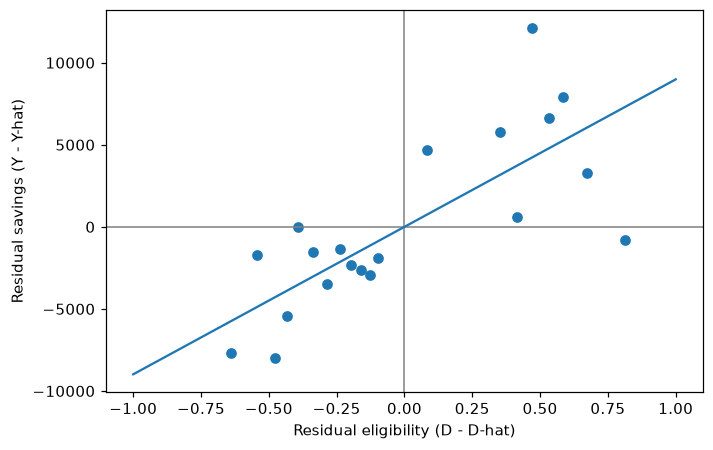

How DML works, by hand
Last updated on 2026-10-30 | Edit this page
Estimated time: 25 minutes
Overview
Questions
- How do two predictions and one regression cut a confounder out of the comparison?
- What does a residual mean for one household?
- Why does each household’s prediction come from a model that never saw it?
Objectives
- Predict savings and eligibility from the confounders with random forests, using cross-fitting
- Compute the residuals and estimate the effect as the slope of one on the other
- Check that with straight-line predictions the same steps give the ordinary regression coefficient
- Show what goes wrong when a flexible model predicts the households it was trained on
From the masterclass
In this episode we build by hand what the slides showed in pictures:
- slide 30, “How DML cuts the confounder out” (model 1 predicts savings, model 2 predicts eligibility, and each keeps only the residual, actual minus predicted);
- slide 31, the same four steps with smoking, exercise and heart disease;
- slide 32, one household’s residuals, the final regression \(Y - \hat{Y} = \theta(D - \hat{D}) + \varepsilon\), and its slope across all households;
- slide 33, “Cross-fitting: models never predict households they trained on”.
A residual is actual minus predicted: what is left over once the prediction is taken away. That is why the chart on slide 32 and slide 33 call them “leftovers”. It is the same thing, and in this lesson we say residual.
In episode 3 DoubleML will do all of this in a few lines, so working through it once by hand here should make it easier to see what those lines are doing.
Set up
If you are continuing from episode 1 in the same notebook,
data is already loaded. Either way, run the following:
PYTHON
!pip install doubleml # once per session
import numpy as np
import pandas as pd
import matplotlib.pyplot as plt
from doubleml.datasets import fetch_401K
from sklearn.ensemble import RandomForestRegressor, RandomForestClassifier
from sklearn.model_selection import KFold, cross_val_predict
data = fetch_401K(return_type='DataFrame')
features_base = ['age', 'inc', 'educ', 'fsize', 'marr',
'twoearn', 'db', 'pira', 'hown']
X = data[features_base]
y = data['net_tfa']
d = data['e401']Step A: predict savings from the confounders
Our first machine learning model predicts each household’s net financial assets from the nine confounders alone, without being told whether the household was eligible. We use the random forest settings from the DoubleML example (slide 37).
Each household’s prediction has to come from a model that was not
trained on that household. KFold splits the households into
three parts, and cross_val_predict trains on two parts and
predicts the third, three times over. This is called
cross-fitting (slide 33), and we can set it up as
follows:
PYTHON
randomForest = RandomForestRegressor(
n_estimators=500, max_depth=7, max_features=3, min_samples_leaf=3, random_state=0)
folds = KFold(n_splits=3, shuffle=True, random_state=123)
y_hat = cross_val_predict(randomForest, X, y, cv=folds)
y_resid = y - y_haty_hat is \(\hat{Y}\),
the savings we would expect given the confounders, and
y_resid is the residual \(Y -
\hat{Y}\). In other words, y_resid tells us how much
more (or less) a household holds than other households like it.
Step B: predict eligibility from the confounders
The second model predicts eligibility from the same confounders.
Eligibility is yes or no, so we use a classifier and ask it for the
probability of being eligible, which is the second column that
method='predict_proba' returns:
PYTHON
randomForest_class = RandomForestClassifier(
n_estimators=500, max_depth=5, max_features=4, min_samples_leaf=7, random_state=0)
d_hat = cross_val_predict(randomForest_class, X, d, cv=folds,
method='predict_proba')[:, 1]
d_resid = d - d_hatd_hat is \(\hat{D}\),
the chance that a household like this one is eligible, and
d_resid is \(D -
\hat{D}\). For an eligible household d_resid is
positive, meaning it is more eligible than expected, and for a household
that is not eligible it is negative.
What do the residuals mean for three households?
Let’s put the predictions and residuals side by side for the first three households:
PYTHON
pd.DataFrame({'net_tfa': y, 'y_hat': y_hat, 'y_resid': y_resid,
'e401': d, 'd_hat': d_hat, 'd_resid': d_resid}).head(3).round(2)OUTPUT
net_tfa y_hat y_resid e401 d_hat d_resid
0 0.0 3356.01 -3356.01 0 0.09 -0.09
1 1015.0 7370.83 -6355.83 0 0.30 -0.30
2 -2000.0 143.99 -2143.99 0 0.39 -0.39Take the second household as an example. Given its income, age and so on, the first model expects it to hold about $7,371, but it actually holds $1,015, so its residual savings are about −$6,356. The second model gives a household like this a 30% chance of being eligible. This household is not eligible, so its residual eligibility is 0 − 0.30 = −0.30.
Step C: one regression
The final step asks whether households that are more eligible than
expected also save more than expected. We answer that with the slope of
y_resid on d_resid. With one predictor and no
intercept, the least squares slope is the sum of the products divided by
the sum of squares, which we can compute directly:
PYTHON
theta_hat = (d_resid @ y_resid) / (d_resid @ d_resid)
print(f"Effect of eligibility, by hand: ${theta_hat:,.0f}")OUTPUT
Effect of eligibility, by hand: $8,984This is close to the $8,910 that DoubleML reports in episode 3. The two are not identical because DoubleML draws its own three folds and its forests make their own random choices. In episode 4 we will see that the choice of model moves the answer by more than this.
The chart on slide 32 plotted DoubleML’s residuals for all 9,915 households, sorted into 20 groups. We can draw the same chart with our own residuals:
PYTHON
groups = pd.qcut(d_resid, 20, labels=False)
binned = pd.DataFrame({'d_resid': d_resid, 'y_resid': y_resid}).groupby(groups).mean()
fig, ax = plt.subplots(figsize=(7, 4.5))
ax.axhline(0, color='grey', lw=1)
ax.axvline(0, color='grey', lw=1)
ax.scatter(binned.d_resid, binned.y_resid)
xs = np.array([-1, 1])
ax.plot(xs, theta_hat * xs)
ax.set_xlabel('Residual eligibility (D - D-hat)')
ax.set_ylabel('Residual savings (Y - Y-hat)')
plt.show()
Each dot is the average for about 500 households with similar residual eligibility. Dots to the left of zero are households that were not eligible, and dots to the right of zero are households that were. The slope of the line is the effect.
Why the slope of the residuals is the effect
Slide 32 wrote the final regression as \(Y - \hat{Y} = \theta(D - \hat{D}) + \varepsilon\). This regression comes from the partially linear model, which slide 38 names:
\[Y = \theta D + g(X) + \varepsilon,\]
where θ is the effect of eligibility and g(X) is everything the confounders do to savings, whatever its shape. Model 1’s prediction, \(\hat{Y}\), is the average savings of households with the same X, and model 2’s prediction, \(\hat{D}\), is their average eligibility. If we average both sides of the model over households with the same X, ε averages to zero and we get:
\[\hat{Y} = \theta \hat{D} + g(X).\]
If we subtract this second equation from the first, g(X) cancels and we are left with:
\[Y - \hat{Y} = \theta (D - \hat{D}) + \varepsilon.\]
So regressing residual savings on residual eligibility estimates θ, whatever shape g takes. The machine learning models only have to predict well, and they never have to tell us what g looks like.
With straight lines, this is ordinary regression
Steps A to C are older than they look. Frisch and Waugh (1933) showed that if both predictions come from ordinary linear regression, the slope in step C is exactly the coefficient on eligibility from a multiple regression of savings on eligibility and the nine confounders. In other words, when a regression “controls for” X, it is doing these three steps behind the scenes. We can check this by using linear regression for both predictions, fitted on all the data:
PYTHON
import statsmodels.formula.api as smf
from sklearn.linear_model import LinearRegression
y_resid_lin = y - LinearRegression().fit(X, y).predict(X)
d_resid_lin = d - LinearRegression().fit(X, d).predict(X)
print(f"Slope of the residuals: ${(d_resid_lin @ y_resid_lin) / (d_resid_lin @ d_resid_lin):,.2f}")
ols = smf.ols('net_tfa ~ e401 + ' + ' + '.join(features_base), data=data).fit()
print(f"Multiple regression for e401: ${ols.params['e401']:,.2f}")OUTPUT
Slope of the residuals: $5,896.20
Multiple regression for e401: $5,896.20You should see the same figure on both lines, and this is what “holding the other variables constant” means in a regression. DML keeps this logic and swaps the straight lines for flexible models. The regression’s $5,896 is lower than the forests’ estimate, probably because a straight line in income cannot follow how savings actually rise with income. We will come back to this in episode 4.
Why do we need cross-fitting?
Suppose we skip cross-fitting and let a very flexible forest, with no depth limit and leaves of one household, predict the same households it was trained on:
PYTHON
flexible = RandomForestRegressor(n_estimators=500, min_samples_leaf=1, random_state=0)
flexible_class = RandomForestClassifier(n_estimators=500, min_samples_leaf=1, random_state=0)
y_resid_in = y - flexible.fit(X, y).predict(X)
d_resid_in = d - flexible_class.fit(X, d).predict_proba(X)[:, 1]
print(f"Residual savings, as a share of the variance of savings: {y_resid_in.var() / y.var():.2f}")
print(f"Effect without cross-fitting: ${(d_resid_in @ y_resid_in) / (d_resid_in @ d_resid_in):,.0f}")OUTPUT
Residual savings, as a share of the variance of savings: 0.11
Effect without cross-fitting: $9,629The forest appears to “explain” almost 90% of the variation in savings. Income and the other confounders cannot really predict savings that well. The forest has partly memorised the households, so their residuals have shrunk towards zero. The estimate is built from those shrunken residuals, and the theory behind DML’s confidence interval no longer applies to it.
Challenge: the same flexible forests, with cross-fitting
Repeat the last block, but this time get the predictions with
cross_val_predict(..., cv=folds), as we did in steps A and
B. What share of the variance of savings is left over now, and what is
the estimate? Fill in the blanks below. In this and every later
exercise, replace each ____ with your answer before you run
the cell: Python reads the blank as a name, so running it unchanged
gives NameError: name '____' is not defined.
PYTHON
y_resid_cf = y - cross_val_predict(flexible, X, y, cv=____)
d_resid_cf = d - cross_val_predict(flexible_class, X, d, cv=____, method='predict_proba')[:, 1]
print(f"Residual share: {y_resid_cf.var() / y.var():.2f}")
print(f"Effect with cross-fitting: ${(d_resid_cf @ y_resid_cf) / (d_resid_cf @ d_resid_cf):,.0f}")PYTHON
y_resid_cf = y - cross_val_predict(flexible, X, y, cv=folds)
d_resid_cf = d - cross_val_predict(flexible_class, X, d, cv=folds, method='predict_proba')[:, 1]
print(f"Residual share: {y_resid_cf.var() / y.var():.2f}")
print(f"Effect with cross-fitting: ${(d_resid_cf @ y_resid_cf) / (d_resid_cf @ d_resid_cf):,.0f}")OUTPUT
Residual share: 0.84
Effect with cross-fitting: $9,269With cross-fitting, 84% of the variation in savings is left over, compared with 11% before. Income and the other confounders predict savings only partly, and the residuals now reflect that. A model cannot memorise a household it never saw, which is why DoubleML always cross-fits.
The estimate of $9,269 is still a little higher than the $8,984 we got in steps A to C. These unrestricted forests are noisier than the tuned ones from the DoubleML example, and the choice of model moves the answer, which is what episode 4 is about.
- DML predicts the outcome from the confounders, predicts the treatment from the confounders, and takes the slope of one set of residuals on the other as the effect.
- A residual is how far a household is from what the confounders predict, in savings or in eligibility, compared with households like it.
- With straight-line predictions the slope equals the multiple regression coefficient (Frisch and Waugh, 1933), and DML swaps in flexible models for the straight lines.
- Each prediction must come from a model that did not see that household (cross-fitting), because otherwise flexible models memorise the data and shrink the residuals.